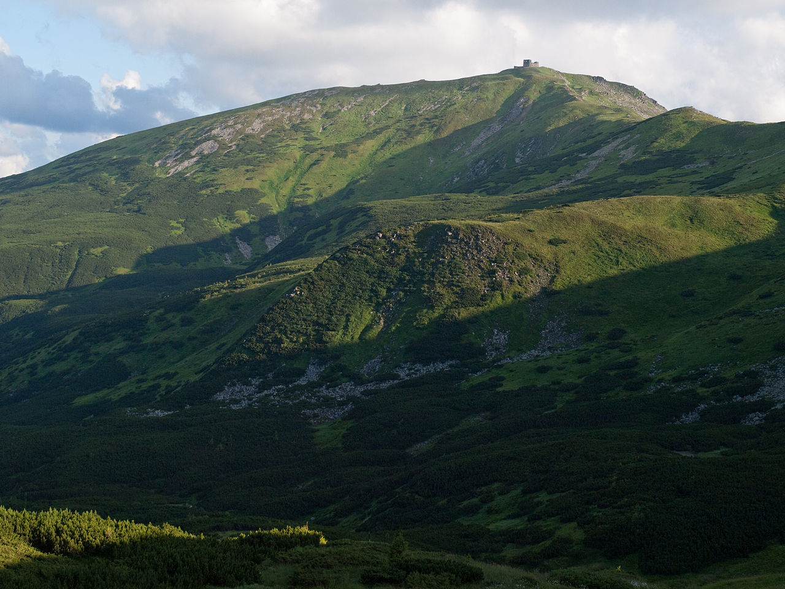

Карпатські вершини
Карпати для туристів
Українські Карпати – це ціла скринька незвіданих можливостей та прекрасних локацій, які по-новому змушують нас дивитись на Україну. Природні багатства гір, шумні водоспади, старовинні палаци та замки на скелях – все це потрібно побачити на власні очі хоча б раз у житті. Ми склали для вас перелік найбільш цікавих гір у Карпатах, які варто відвідати уже цього літа.
Говерла
- Висота: 2061м
- Найвища вершина Українських Карпат і найвища точка України
- Розміщена в гірському масиві Чорногора
Бребенескул

- Висота: 2038м
- Одна з найвищих вершин хребта Чорногора
- Розташована посередині хребта, на межі Івано-Франківської та Закарпатської областей
Піп Іван Чорногірський
- Висота: 2028м
- На вершині гори знаходяться руїни польської астрономо-метеорологічної обсерваторії — Білий Слон
- Розташована на кінці головного хребта масиву Чорногора, на межі Івано-Франківської та Закарпатської областей
- Висота: 2020м
- Популярний об'єкт пішохідного туризму
- Гора розташована у Рахівському районі Закарпатської області
- Висота: 2016м
- На північно-східному схилі між горою Гутин Томнатик і Бребенескул у льодовиковому карі на висоті 1801 метрів над рівнем моря розташоване озеро Бребенескул
- Розташована у Рахівському районі Закарпатської області, в межах Карпатського біосферного заповідника (Чорногірський заповідний масив)
- Висота: 1936м
- Гора в Українських Карпатах, одна з вершин Гуцульських Альп (частина Мармароського гірського масиву)
- Розташована в Рахівському районі Закарпатської області, на кордоні України і Румунії
-

-

-

Петрос